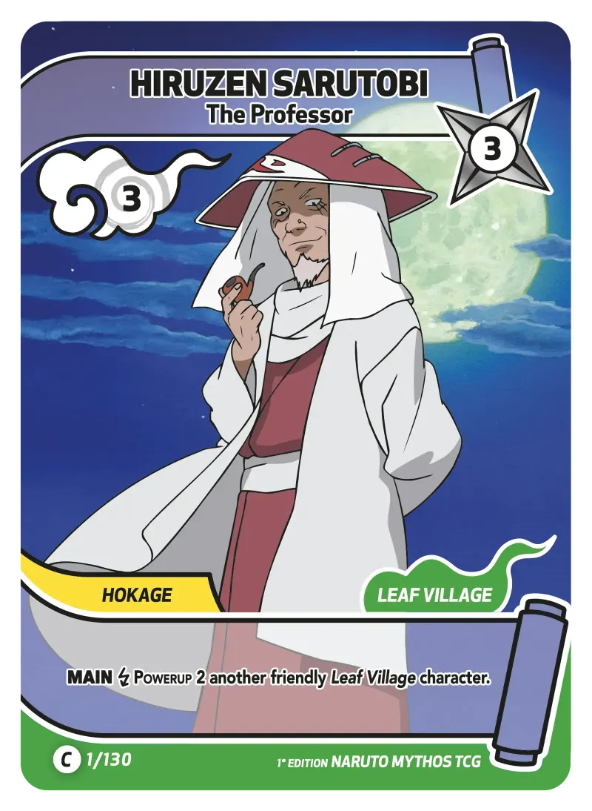
C
HIRUZEN SARUTOBI
Le Professeur
Chakra 3
Puissance 3
Exercice 6.1, DOM JavaScript
Une selection du set Konoha Shido du jeu Naruto Mythos TCG. Tu peux filtrer la galerie en direct par rareté ou par groupe, le DOM se met à jour sans recharger la page.

Le Professeur
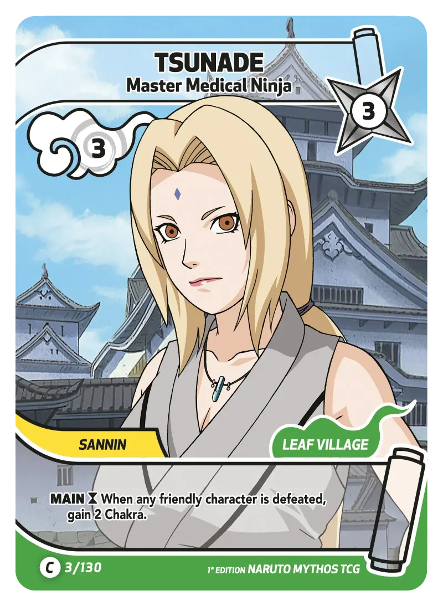
Maître Ninja Médical
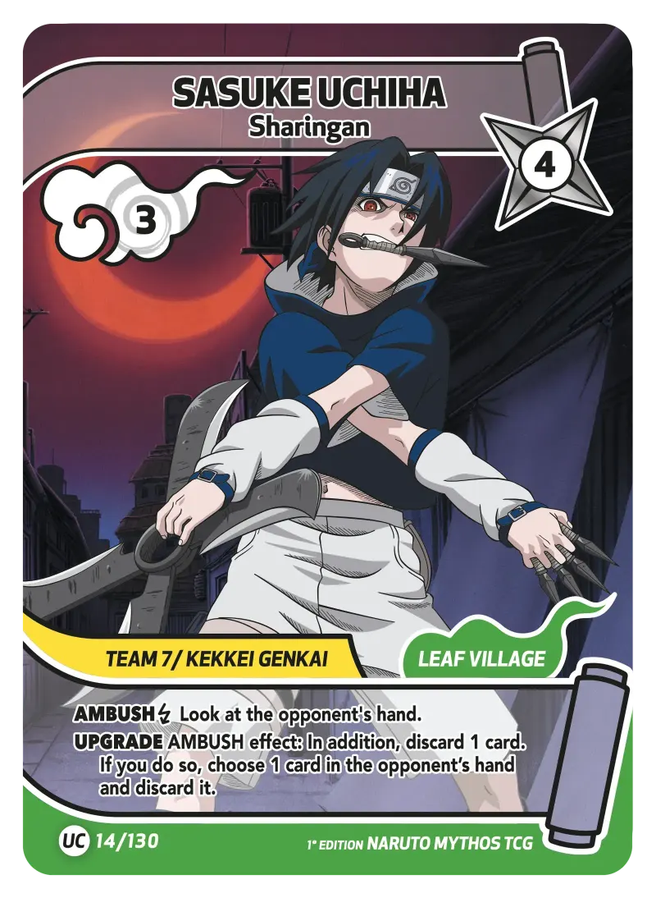
Sharingan
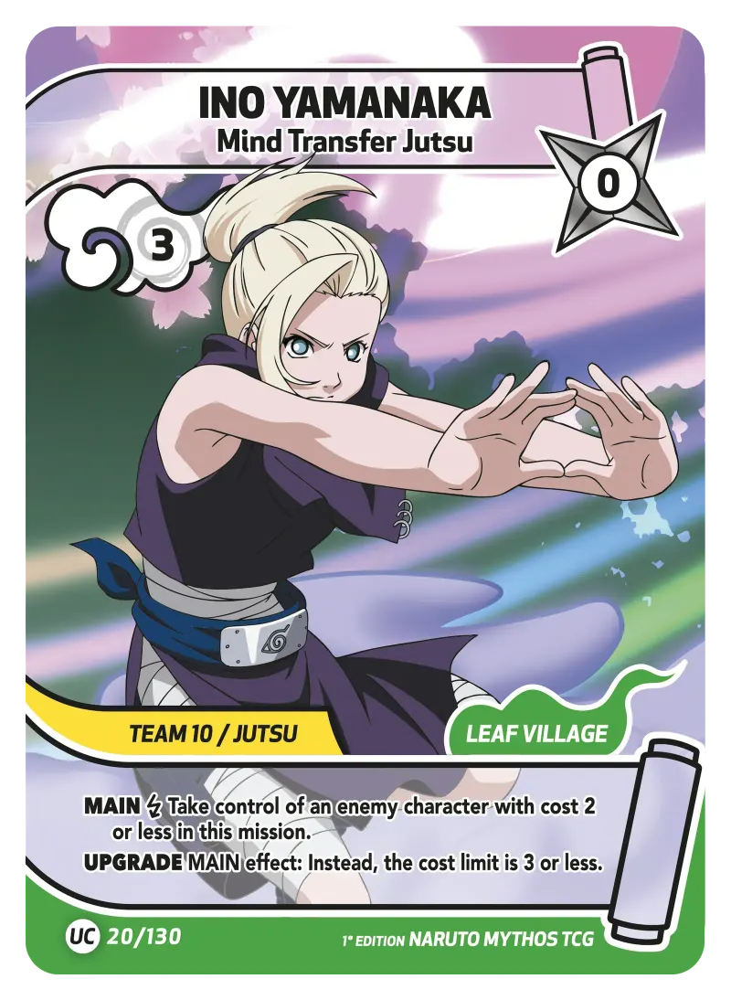
Mind Transfer Jutsu
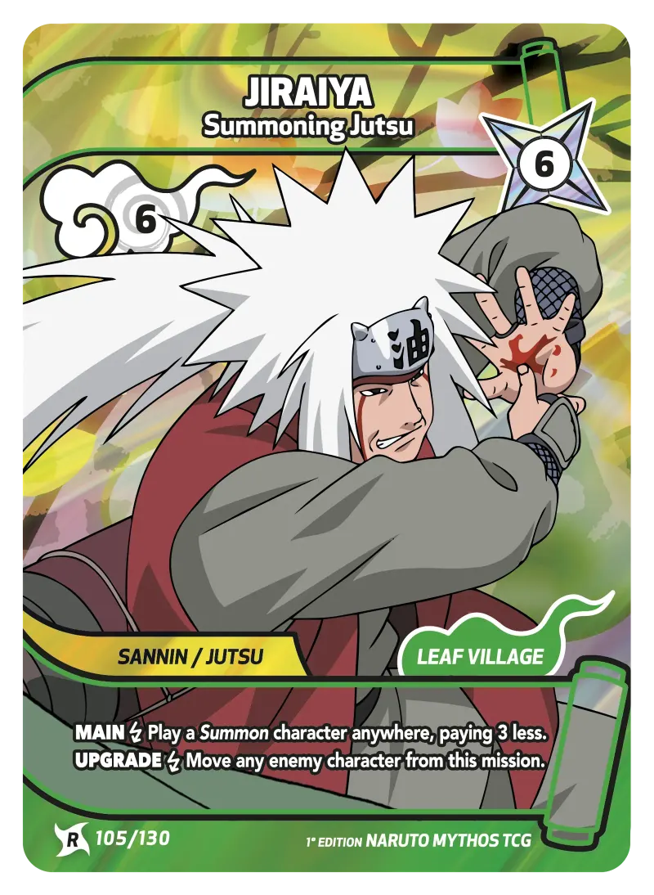
Jutsu d'Invocation
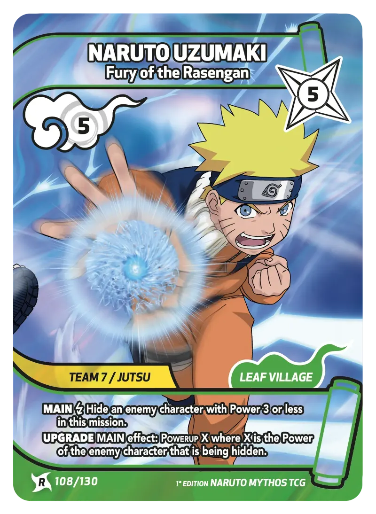
Fureur du Rasengan
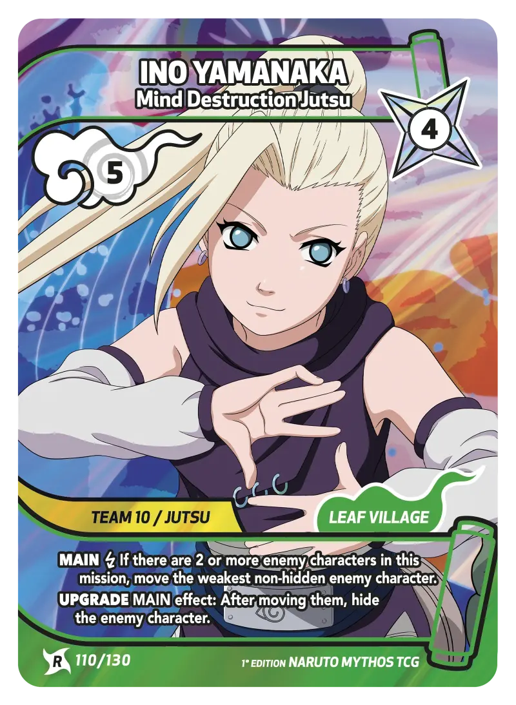
Jutsu de Destruction Mentale
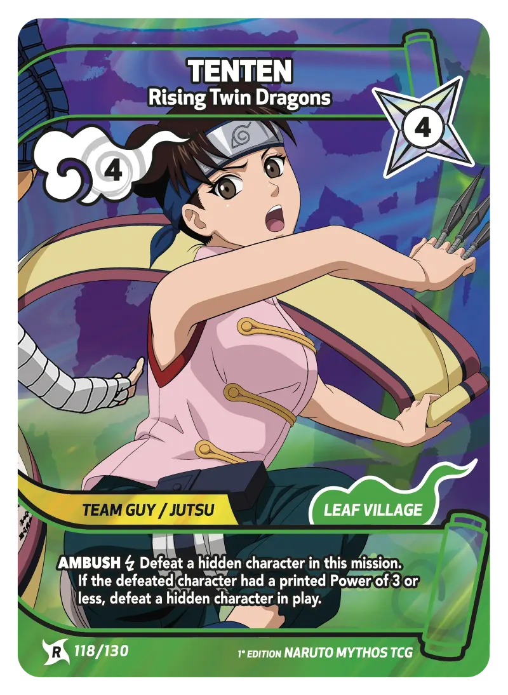
Rising Twin Dragons
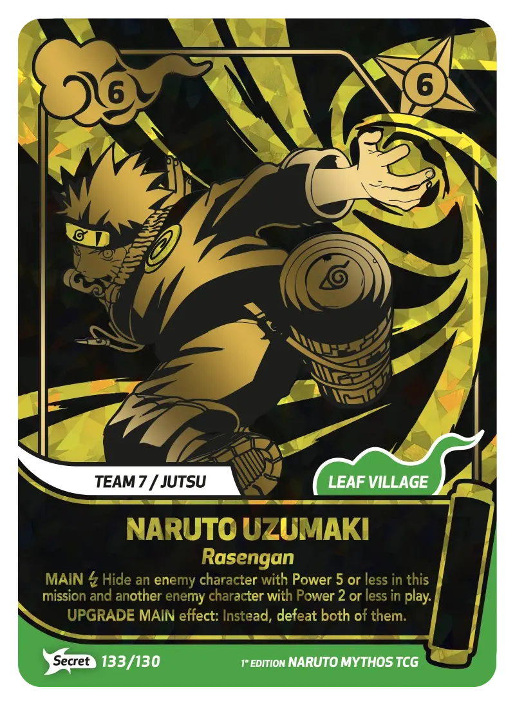
Rasengan
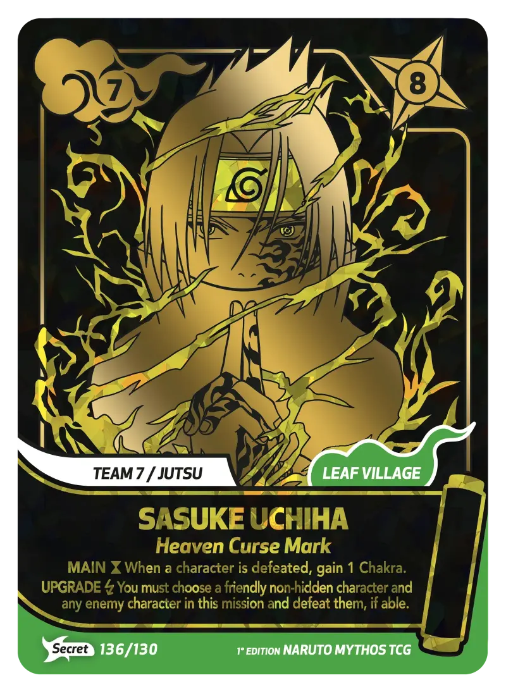
Marque maudite du Ciel
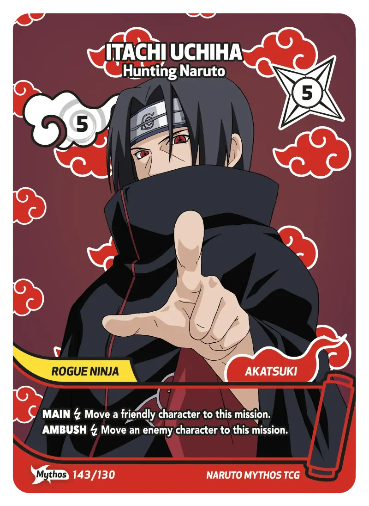
Traquant Naruto
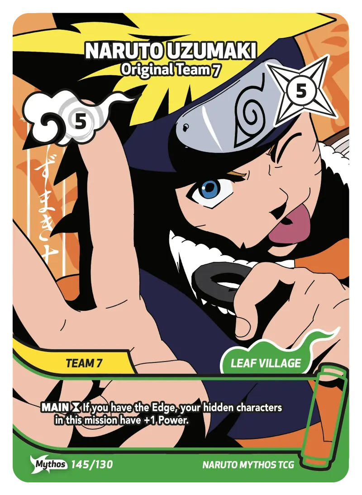
Équipe 7 originelle
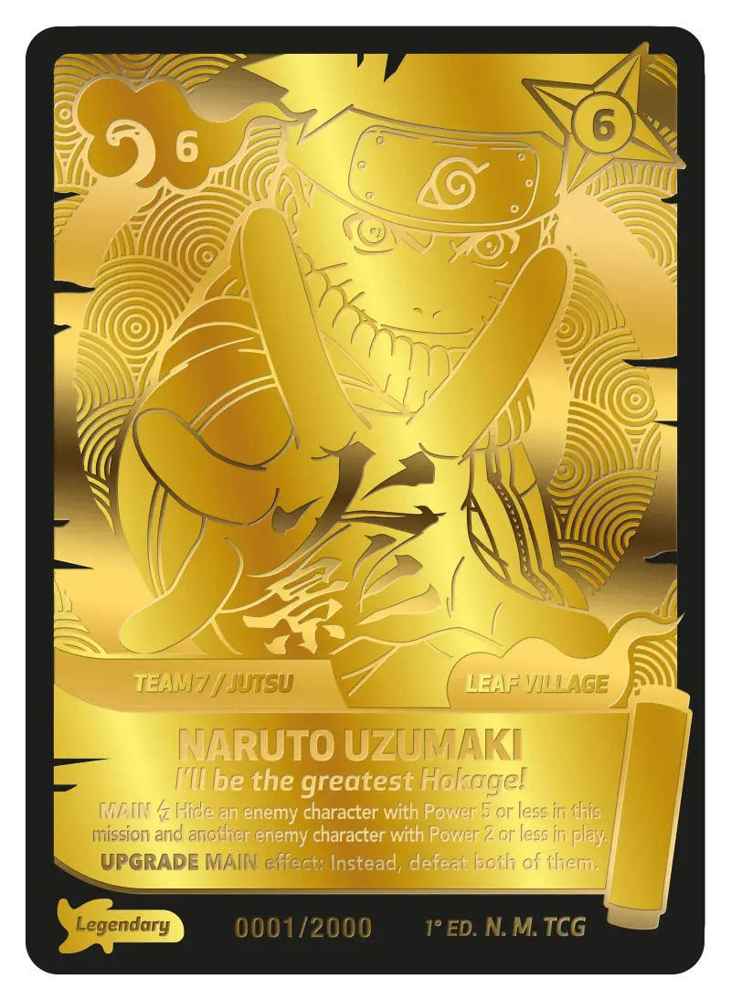
Je serai le plus grand Hokage
Aucune carte ne correspond à ces filtres. Réinitialise ou essaie une autre combinaison.